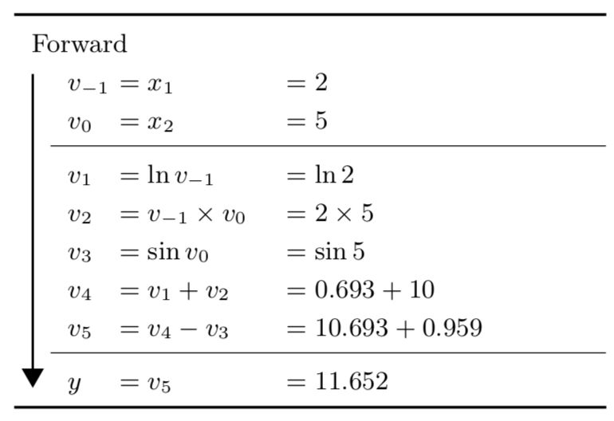
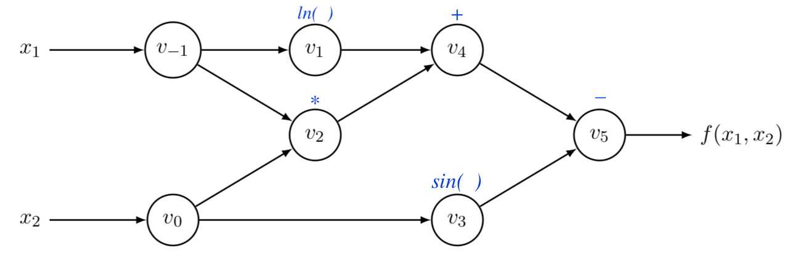
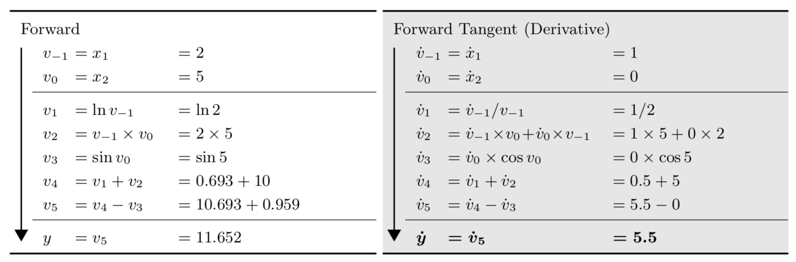
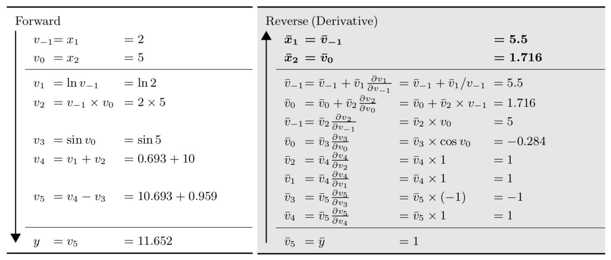

23. Automatic Differentiation#
This chapter is adapted from AM207 (Harvard, Fall 2021). Watch the recorded lecture.
In this chapter
Review of BBVI
Automatic Differentiation
23.1. Review of Black Box Variational Inference#
Developments in Computationally Efficient Variational Inference#
Black-box Variational Inference (2013) Uses the log-derivative trick to rewrite the gradient of the ELBO as:
This requires only the computation of the gradient of \(q(\mathbf{W})\), which is generally much simpler than \(p(\mathbf{W}) \prod_{n=1}^N p(Y^{(n)} | \mathbf{X}^{(n)})\).
Implementation of BBVI means hard-coding a large library of different kinds of variational distributions \(q(\mathbf{W} | \lambda)\) and their gradients. User inputs the joint distribution of their Bayesian model and chooses a variational family \(q(\mathbf{W} | \lambda)\) - then you can optimize the variational parameters \(\lambda\) to best approximate the target posterior by gradient descent.
Weight Uncertainty in Neural Networks (2015) Assuming the variational family is mean-field Gaussian, uses the reparametrization trick to rewrite the gradient of the ELBO as:
\[\begin{split}\begin{aligned} \nabla_{\mu, \Sigma} \, ELBO(\mu, \Sigma)=& \mathbb{E}_{\epsilon \sim \mathcal{N}(0, \mathbf{I})}\left[\nabla_{\mu, \Sigma} \log \left[p(\epsilon^\top \Sigma^{1/2} + \mu) \prod_{n=1}^N p(Y^{(n)} | \mathbf{X}^{(n)}, \epsilon^\top \Sigma^{1/2} + \mu)\right]\right]\\ &+ \nabla_{\mu, \Sigma}\underbrace{\mathbb{E}_{\mathbf{W} \sim \mathcal{N}(\mu, \Sigma )}\left[\log \mathcal{N}(\mathbf{W};\mu, \Sigma ) \right]}_{\text{Guassian entropy: has closed form}} \end{aligned}\end{split}\]
For Bayesian Neural Networks, the gradient in the above can be computed by backpropagation - then you can optimize the variational parameters \(\mu, \Sigma\) to best approximate the target posterior by gradient descent. This algorithm is called Bayes by Backprop.
Automatic Differentiaition Variational Inference (2016) Anytime the gradient of the ELBO can be written as the expectation of a gradient (of an expression without integrals), the gradient can be computed by any automatic differentiation package - then you can optimize the variational parameters \(\lambda\) to best approximate the target posterior by gradient descent.
23.2. Automatic Differentiation#
Types of Computational Differentiation#
Manually computing closed form expressions of derivatives and then coding them up (say using
numpyfunctions).numeric differentiation: approximate a derivative \(\frac{df(x)}{dx}\) with a rate of change \(\frac{f(x+h) - f(x)}{h}\) at \(x=a\).
symbolic differentiation: manipulate expressions of functions using pre-programmed rules (of differentiation).
automatic differentiation: algorithmic computation of exact numeric derivatives.
autogradis apythonimplementation of automatic differentiation.pytorchimplements one particular mode of automatic differentiation, also calledautograd.
Numeric Differentiation#
Given \(f: \mathbb{R}^n \to \mathbb{R}^m\), approximate each gradient \(\nabla f_j = \left(\frac{\partial f_j}{\partial x_i}\ldots \frac{\partial f_j}{\partial x_n}\right)\) for \(i = 1, \ldots, n\) and \(j = 1, \ldots, m\) with
where \(e_i\) is the \(i\)-th standard basis vector of \(\mathbb{R}^n\).
This is numerically unstable when \(h\approx 0\) and biased when \(h\) is large. For each gradient \(\nabla f_j\), it requires \(O(n)\) computations.
Symbolic Differentiation#
Given an expression for a function \(f: \mathbb{R}^n \to \mathbb{R}^m\), we represent the expression as a tree and automatically manipulate the expression tree by applying transformations representing differentiation:
This can be computationally inefficient since expressions of derivatives can be exponentially longer than the original function expression:
Numerical evaluation of the derivative can be inefficient due to the redudant evaluation of the components of \(f\).
Automatic Differentiation: The Idea#
We decompose a function \(f(a, b) = (a + b)(b + 1)\) into elementary operations:

We apply symbolic differentiation to elementary operations, like: arithmetic operations, elementary functions (exponential, logarithmic, trignometric, power).
We keep intermediate values of the components of \(f\) so that they can be reused.
Evaluation Trace and Computational Graph#
Given a function \(f: \mathbb{R}^n \to \mathbb{R}^m\), we represent \(f\) as the composition of elementary functions through elemtary operations by a sequence of intermediate values \(v_k\) that is involved with the evaluation of \(f\), this is the evaluation trace. We can also represent the trace graphically, resulting in the computational graph.
Example: Given \(y = f(x_1, x_2) = \ln(x_1) + x_1x_2 - \sin(x_2)\), its evaluation trace and computational graph are:
|
 |
 |
Automatic Differentiation: Forward Mode#
In forward mode automatic differentiation, we start with the input and work towards the output: evaluating the value of each intermediate value \(v_k\) as well as the derivative of \(v_k\) with repect to a fixed \(x_i\) using the chain rule:
We denote \(\frac{\partial v_k}{x_i}\) by \(\dot{v}_k\).


Automatic Differentiation: Reverse Mode#
In reverse mode automatic differentiation, we first do a forward pass to compute all intermediate values. Then we start with in the output and work towards the input: evaluating the derivative of \(f\) with repect to an intermediate value \(v_k\) using the chain rule:
We denote \(\frac{\partial f}{v_k}\) by \(\overline{v}_k\).


Implementing Reverse Mode AutoDiff#
We see that each intermediate gradient computation \(\frac{\partial f}{\partial v_k}\) in reverse mode autodiff is local, it only requires:
the current value of \(v_k\)
the derivative of \(f\) with respect to every child of \(v_k\): \(\frac{\partial f}{\partial v},\, v\in \mathrm{child}(v_k)\).
the derivative of the elementary function \(h_v\) describing the way \(v\) depends on \(v_k\).
We implement the computation graph of a function \(f\) as a directed graph, where each node keeps tracks of the above three pieces of information and uses them to compute its own gradient.
An Example of Reverse Mode AutoDiff in python#
x = Var(0.5)
y = Var(4.2)
z = y + sin(x)
z.grad_value = 1.0
print('value of y + sin(x) evaluated at x=0.5, y=4.2: {}\nforward pass of our implementation: {}'.format(4.2 + np.sin(0.5), z.value))
value of y + sin(x) evaluated at x=0.5, y=4.2: 4.679425538604203
forward pass of our implementation: 4.679425538604203
x.grad()
0.8775825618903728
print('value of dz/dx = cos(x) evaluated at x=0.5, y=4.2: {}\nreverse pass of our implementation: {}'.format(np.cos(0.5), x.grad_value))
value of dz/dx = cos(x) evaluated at x=0.5, y=4.2: 0.8775825618903728
reverse pass of our implementation: 0.8775825618903728
23.3. Further Reading#
Automatic Differentiation